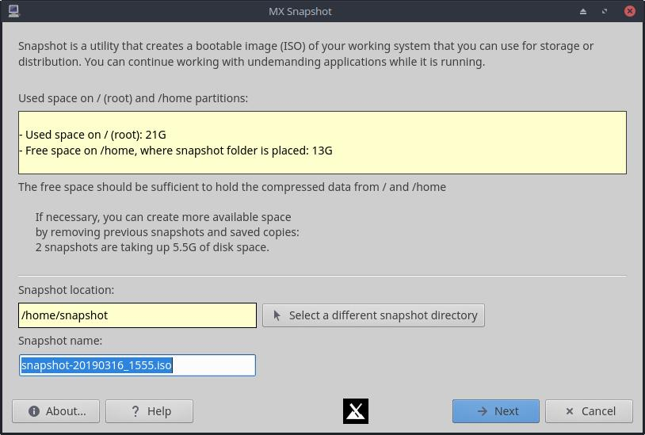
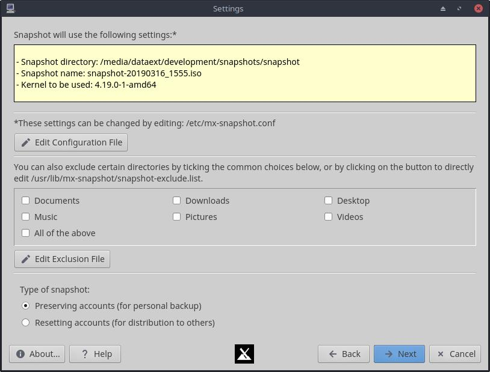

HELP: MX Save system to ISO (Snapshot)
Overview
MX Snapshot takes care of two main situations:
- A “#8220;personal snapshot” and saves pretty much everything, used if you want to backup your current system including home. Excluded are only some cache and log folders that are listed in the exception file (that file can be examined from the program by clicking on the appropriate button). The program also tries to “generalize” the ISO, in a sense that it removes files that are machine specific like /etc/fstab (you might use the ISO on a machine that has different harddrive partitions), also Xorg config file is not saved (for example if you have Nvidia or ATI/AMD driver installed the snapshot won’t preserve that setting because you might use the ISO on a different machine that doesn’t have an Nvidia or ATI card). If you intend to use it as a backup on the same machine then comment out the appropriate xorg.conf line in the exclusion file. The user also has a number of checkboxes to help exclude some big folders, like Downloads, Desktop, Documents, Movies, Photos, etc.
- A “system snapshot” with all the apps you installed and without all the apps you removed, but without stuff from /home. That’s what we call “reset accounts” snapshot because in addition to generalizing the ISO it also resets root password to “root” and creates a demo username with a “demo” password. /home/demo is generated at boot time and populated with files from /etc/skel. This option is meant to create a kind of respin ISO that can be used, for instance, to distribute to other people or to use as a base for a custom lab install.
Requirements

The first screen shows the available space using the default settings. It is recommended that the free space for the snapshot be at least equal to the used space in / (root) and /home partitions. (The created ISO file will be compressed, so you might be able to do with a little bit less than that.) If that is not the case, use the buttons below to change to a directory with more free space.
Settings options

- Edit Configuration File button: allows direct editing of the mx-snapshot.conf file to specify special settings, like type of compression to use. The file is commented to aid in custom configurations.
- Locations. You can change the location of the snapshot directory, which can be very useful if the default location does not have a great deal of available space.
- Exclusions. To make the ISO smaller and speed up the process, you may want to exclude from the ISO directories you do not need. Common exclusions are available on the Settings screen, and others can be included by directly editing the exclusions file using the button provided.
- Note that if in addition to customizing the app selection you want to customize the look of the Desktop, you will need to edit the /etc/skel files
Procedures
Best procedure is to make the snapshot with all the programs closed — your machine will need memory and CPU to create the image and this would help.
- If you select “reset accounts for distribution to others” then you could continue working normally with non-demanding tasks while your snapshot is being taken, because /home is not going to be copied and files in /var /run (where programs write their logs and temporary files, locks) are excluded.
- If you select “preserving accounts,” then some locks might be preserved that you don’t want. For example: some browsers create a lock file to make sure the user doesn’t start another instance, and some other programs might do the same. If you save those locks by mistake you might have problems starting the program even though it is not running (fixed by deleting the lock file).
Tips and tricks
- If an install icon is missing from the the desktop, press F4 and use this command sudo -E minstall
Development history: Fsmithred (Refracta linux), anticapitalista, BitJam (antiX), Adrian
License: here.
v. 20180803